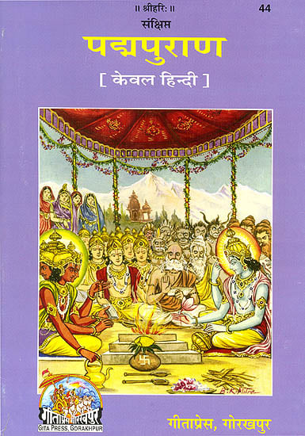
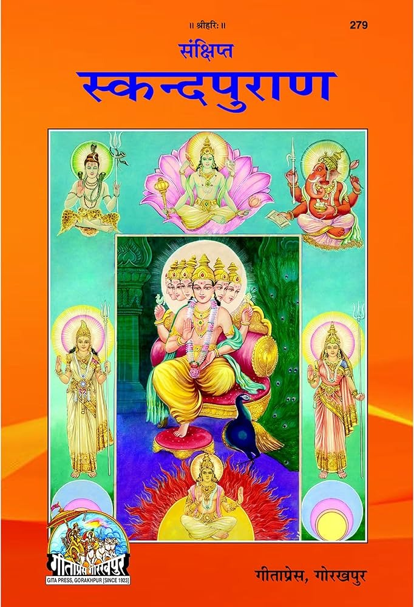
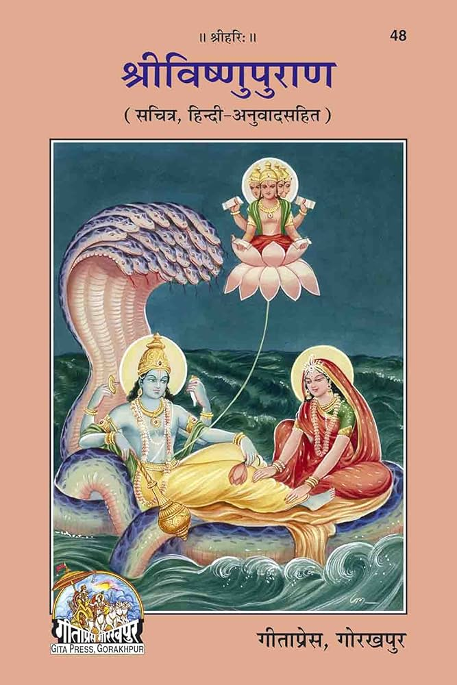

|| Pandhari's Significance ||
The pauranik (mythological) relevance and importance of Pandharpur Pandharinath or Vitthal is not God of only Varkari culture in Maharashtra but is God of many Vaishnava its from places like Karnataka, Andra Pradesh, Tamilnadu, Utter Pradesh, Madhya Pradesh etc, Vitthal is not confined only to the Marathi culture. Many saints around the country have mentioned the importance of devotion of this God Vitthal. The ancient tradition of Shri Vitthala’s worship could be traced back to the Hindu philosophical scripture like Upanishad. There is story of King Janshruti in 4th chapter of Chandogya Upanishad. Once he listened whisperings of swans while resting under a starry sky. These flying swans were some seers. One swan praised the beauty of moonlight while the other said the fame of king Janshruti is more comforting than the moonlight. Other swan said that there was a person greater than King Janshruti whose name was Raikava. He was an owner and driver of a bullock cart but was an enlightened person. King Janshruti after listening this fact started a search for Raikava. In the last he found Raikava in Kashmir. King Janshruti had mentioned about his visit to Pandharpur when he was on the way to search for Raikva.
Importance
The pauranik (mythological) relevance and importance of Pandharpur Pandharinath or Vitthal is not God of only Varkari culture in Maharashtra but is God of many Vaishnava its from places like Karnataka, Andra Pradesh, Tamilnadu, Utter Pradesh, Madhya Pradesh etc, Vitthal is not confined only to the Marathi culture. Many saints around the country have mentioned the importance of devotion of this God Vitthal. The ancient tradition of Shri Vitthala’s worship could be traced back to the Hindu philosophical scripture like Upanishad. There is story of King Janshruti in 4th chapter of Chandogya Upanishad. Once he listened whisperings of swans while resting under a starry sky. These flying swans were some seers. One swan praised the beauty of moonlight while the other said the fame of king Janshruti is more comforting than the moonlight. Other swan said that there was a person greater than King Janshruti whose name was Raikava. He was an owner and driver of a bullock cart but was an enlightened person. King Janshruti after listening this fact started a search for Raikava. In the last he found Raikava in Kashmir. King Janshruti had mentioned about his visit to Pandharpur when he was on the way to search for Raikva.
संस्कृत श्लोक:
'ततो निवृत्त आयात: पश्यन्भीमरथीतटे |
द्विभुजं विठ्ठलं विष्णुं भुक्तिमुक्तिप्रदायकम् |
यत्र भीमरथीतीरे बिन्दुमाधव संज्ञित:|
हरि: स वर्ततेSद्यापि भुक्तिमुक्तिप्रदो नृणाम् ||'
English Transliteration:
"Tatto nivritta ayatah pashyanbhimarathitate |
Dvibhujan vitthalam vishnum bhuktimuktipradayakam |
Yatra bhimarthitire bindumadhava sandnitah |
Harih sa vartate$dyapi bhuktimuktiprado nrunam ||"
Meaning: They started search of the Raikava and arrived on the bank of river Bhima. On the bank of river Bhima he arrived the place where the God 'Vitthal' who is Vishnu’s reincarnation only. This pilgrimage is known as Bindutirth and God of this place is known Bindumadhav. There the God who gives the blessings of material and spiritual prosperity still lives.
Ancient Scriptures

Varahsanhita in Paddyapuran explains the significance of God Pandurang or Vitthal. This is comprised of 32 chapters (adhyayas).This is a kind of dialogue between Sootarishi and his followers. There is a reference that it was first narrated by Lord Shankar to Devi Parvati. Then Rishi Narad told that to Shesh. Pandurang mahatmya throws light on how Pandurang/Vitthal came in Pandharpur. It tells about the history and significance of Lord Vitthal’s standing on brick in Pandharpur. How river Bhima originated? It also informs about the various God and deities in Pandharpur. Pandharpur is a sort of design in which Lord Vitthal is situated at the center. Other centers are at the point of the triangle. Pandharpur is as holy as Kashi, Neera Narasingpur is as Prayag and Korti or Vishnupad is like Gaya. So the blessings of the pilgrimage of these three places could be gained by visiting Pandharpur. The rituals of Kashiyatra and Gayashraddha could be performed here. All this types of secrets are mentioned in this Varahsanhita of Paddyapuran.

The second 'Pandurang mahatmya' appears in Skandapuran’s Uttarsanhita which is comprised of 12 chapters. It’s verses are around 813. Here Skanda after having failed to answer the questions asked by some Rishis went to holy mountain Kailash where Lord Shankara dwells. Shankara was also asked the same question by Parvati. Lord Shankara was just about to answer Parvati’s question, Skanda along with Rishis reached there and asked the same to Lord Shankara.
संस्कृत श्लोक:
‘पुष्करात् त्रिगुणं पुण्यं केदारात् षड्गुणं भवेत् |
वारणश्याद् दशगुणं अनन्तं श्रीगिरेरवि ||'
English Transliteration:
'Pushkara trigunam punyam kedarat shadgunam bhavet |
Varanashyad dashagunam anantam shrigireravi ||'
Meaning: This place is spiritually fruitful three times more than Pushkar, six times more than Kedarnath, ten times more than Varanashi and many more times than Shrishaila. Here yatra, vari and alams giving have got importance. There are four external and four internal gates of this place. One should enter in city through these gates only and bow the head to the deity of these respected gates. At the internal gate there is Goddess Sarasvati to the east, Siddheshvar of Machanoor to the south, Bhuvaneshvary to the west and Mahishasoormardini to the north. At the external gates there are Trivikarms of Ter to the east, Koteshvar of Krishnatir Shorpalaya Kshetra to the south, Mahalakshmi of Kolhapur to the west, and Narsinha of Neeranarasinhapur.
संस्कृत श्लोक:
क्षेत्रे ह्यस्मिन् महाविष्णु : सर्वदेवोत्तमोत्तम:|
आस्ते योगीश्वरोद्यापि शक्तिभिर्नवभि:सह |
विमलोत्कार्षिंणी ज्ञाना क्रिया योगा तथैवच |
प्रव्ही सत्या तथेशानानुग्रहा चेति शक्तय :|’
English Transliteration:
Kshetre hyasmin mahavishnuh sarvadeottamah:|
Aaste yogishvarodyapi shktibhirnavabhih saha |
Vimalotkarshini dnyana kriya yoga tathaivacha |
Pravi satya tatheshananugraha cheti shktaya:|’
Meaning: In this place the greatest of all Lord Yogishvara, Mahavishnu resides here with His nine divine powers. Those nine powers are named Vimala, Uttkarshani, Dyan, Kriya, Yoga, Pavi, Satya, Eshana, Anugraha..
- In Front of Pandurang idol there is Garud (eagle), Brhama with Sanakadika are on the right of it, eleven Rudras with Lord Shankara are on the left of it. indra and all other deities are behind the idol and all these are praising Lord Pandurang.
- This ancient scripture elaborates on the significance and benefits of various services performed in the temple such as taking shelter in the shadow of the temple, Pandurang darshan saying praise of the name of Pandurang in front of him, dance in the rangshala, visiting temple for darshan at the time of dhuparti, cleaning the area of the temple etc.
- The scripture throws light on the significance Kundal Tirtha and Padma Tirtha in Pandharpur..
- Dhaumya Rishi and Udhishtir with all his brothers visited this holy place, Balram also came and served the Lord. Rukmini served the Lord in Pandharpur and gave birth to her son Pradyumna..
- Effect of river Bhima its arrival in Pandhari, Pandhari’s guardian Shri Bhairava, the meditation of devotee named Muktakeshi and her acceptance by God all these details are mentioned in this scripture.

The third ‘Pandurang Mahatmya’ appears in Vishnudharmakathan Chapter of Vishnu Puran. It contains six chapters of 186 Verses. It is a dialogue between Vasishta Rishi and Trit Rishi. Vasishta is narrating it. This scripture narrates the story of Pundalik in detail. It makes it clear that Lord Vitthal arrived here to meet Pundalik and Brahma gifted him with Shrivigraha. Here’s a verse from this scripture:
'क्षेत्रेषु तीर्थेष्वथ दैवतेषु भक्तेषु सर्वेष्विह वै वरिष्ठम्|
श्रीपौण्डरींक किल चन्द्रभागा श्री विठ्ठलोयं मुनिपुण्डरीक:||'
English Transliteration:
Kshetreshu teertheshvath daivateshu bhakteshu sarveshvuha vai varishtam|
Shrioaundarinka kil chandrabhaga shri vitthaloyam munupundarikah||
Meaning: Shri Pandhari pilgrim is the most sacred among all, in all rivers the holiest river is the Chandrabhaga, in all Lords Shri Vitthal is the best and in all devotees Bhakt Pundalik is the best. Saint Tukaram interprets this verse properly in his spiritual poems.
Spiritual Significance
The Vittal Rukmini Temple, dedicated to Lord Vittal (a form of Lord Krishna) and Goddess Rukmini, holds deep spiritual significance in Hinduism. It symbolizes divine love and devotion, with Rukmini representing the ideal devotee and Vittal embodying Krishna’s compassionate nature. It holds immense religious and cultural significance, particularly within the Bhakti movement. The temple is the focal point of devotion for millions, especially during the Ashadhi Ekadashi and Kartiki Ekadashi festivals, which see vast numbers of devotees making pilgrimages, often on foot, to seek the blessings of Lord Vithoba. Historically, the temple is deeply connected to the saints of the Bhakti movement, such as Sant Tukaram, Sant Dnyaneshwar, and Sant Namdev, whose hymns and teachings have shaped the spiritual landscape of the region. The temple's rich history, which dates back over 1,000 years, has survived invasions and challenges, making it a symbol of resilience and unwavering faith. With its association to important religious texts and the continued devotion of countless pilgrims, the Pandharpur Temple stands as a significant center of worship and cultural identity in Maharashtra.
Saint Tukaram beautifully interprets this verse in his abhang, praising the significance of Pandharpur as a place of divine importance:
'अवघीच तीर्थेघडली एक वेळा | चंरभागा डोळा देखिललया ||
अवघीच पापेगेली ददंगंतरी | वैकंुठ पंढरी देखिललया ||
अवनघया संता एक वेळा भेटी | पुंडललक दृष्टी देखिललया ||
तुका म्हणे जन्मा आल्याचे सार्थथक | ववठ्ठलगच एक देखिललया ||'
English Transliteration:
Avaghachi teerthe ghaali eka vela/ chandrabhaga dola dekhiliyeliya ||
Avaghachi pape geli digantari/ vaikuntha pandhari dekhiliyiliya||
Avaghiya santa eka vela bheti/ pundalika drishti dekhiliyeliya ||
Tuka mhane janma alyache sar thak/ vitthalachi eka dekhiliyeliya ||
Meaning: In this abhang, Saint Tukaram emphasizes the importance of Pandharpur and the significance of Lord Vitthal, stating that visiting Pandharpur leads to spiritual liberation.